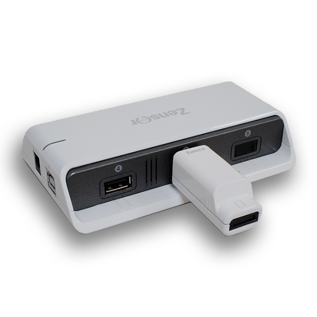
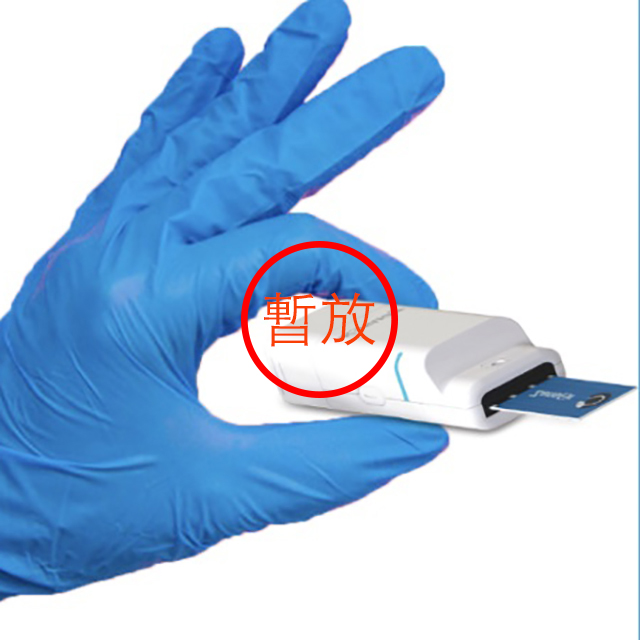
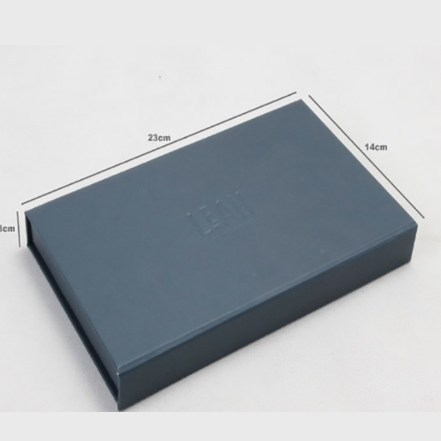
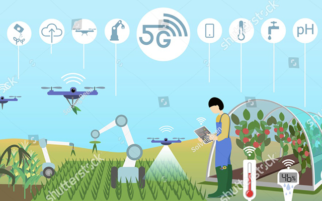
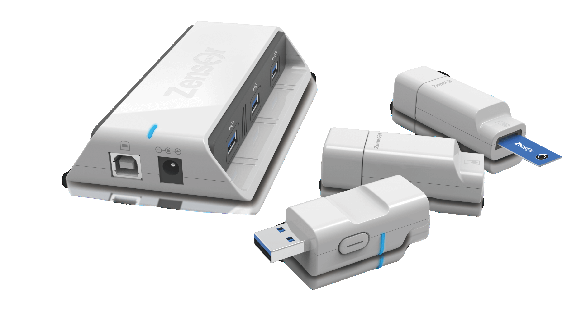
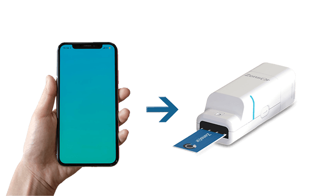
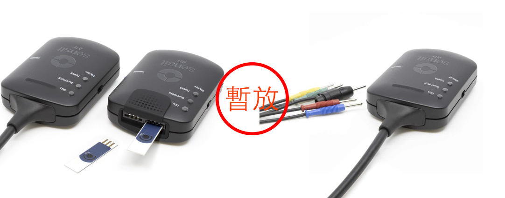

- 電化學相關（5)
- 化學感測器實擬分析儀 - Zensor Simulator(4)
- ECAS100
- ACIP100
- Optical + EC
- 電化學偵測器 - Zensor ECD(1)
- SF100
- 網版印刷電極 - Zensor SPE(7)
- 電極客製服務
- TE100 碳三電極
- SE100 碳單電極
- AG100 銀電極
- AUSE100 金電極
- SAUTE100 金電極
- AUTE200 金電極
- 無線&多通道恆電位儀 / 電化學分析儀 - Zensor MCP(2)
- ECWP100
- MCP100
- 其他產品(3)
- CS100
- CM100
- CT100
- 化學感測器實擬分析儀 - Zensor Simulator(4)
- 相關公司（8）
禪譜產品分類
- 相關公司（8）
Hello
Welcome to Zensor
{kind=link}
{kind=link}
⚡︎獨特技術
最輕，最小，可放入極小密閉空間
為了滿足最新學術研究趨勢與產品開發需求，我们结合最新的研究趨勢和實用的產品研發經驗推出這款業界最小，符合感測器開發所需精度及靈敏度的無線傳感器研究與開發平台。
  ⚡︎只有手指大小的無線電化學分析儀
業界最輕，最小，可放入極小密閉空間
可以在極小的空間精準的控制實驗條件，提高實驗條件維持的穩定度。 適用於需要精準控制環境氣體濃度，溫度等條件的實驗
.gif)
⚡︎無線連接，業界趨勢
滿足戶外，智慧農場，智慧家庭，智慧醫療，物聯網IoT傳感器等無電源或遠距感測器開發需求
*充滿電可持續使用3-6小時，使用時間與傳輸距離有關，也可以外接使用行動電源或普通電源
⚡︎穿戴式傳感器的研發
穿戴式傳感器的研發 智慧生活的基礎就是感測器的研發。可監測各種指標信號的穿戴式感測器可以感知使用者的行為，環境的變化，為智慧產品提供運作的大數據，從而實現直接行動以滿足使用者的需求。我們的無線小型化的研究平臺可以縮短您的開發歷程。
⚡︎會成長的電化學分析儀
根據不同的實驗需求變換成多通道電化學分析儀，
最多可以擴充到8通道
多通道模式下允許協同或分別控制每個感測器
協同模式： 可以在同一實驗條件下，以多電極一起測試，確保實驗數據的可靠性重現性。
多通道模式下允許協同或分別控制每個感測器。
分別控制模式： 每一個感測器可以對同一樣品同時檢測不同指標，更快取得更多實驗數據。
⚡︎可靠的2.4G傳輸技術，無需配對，即插即用
數據傳輸距離最遠可達20m
⚡︎兩種連接口，輕鬆轉換
無論是網版印刷電極（絲網印刷電極）/鱷魚夾，一秒切換
*鱷魚夾接口非標準配備需另外購買
| ElectrochemicalMethods | (A)Cyclic voltammetry(CV) (B)Amperometry(IT) (C)Open circuit potentiometry(OCP) (D)Differential pulse voltammetry(DPV) (E)Square wave voltammetry(SWV) (F)Linear sweep voltammetry(LSV) |
|---|---|
| Range | (A)Voltage range scan :+2~-2(v) OCP voltage range:+1800mV~-1800mV (B)Current range:1x10-3 ~1x10 -10 (A) (C)Current resolution:0.5% of current range (D)Maximum wireless distance:20m |
| Operation system | window 7 and / or above |
| Communication | USB1.1 and 2.4G RF |
| Power | (A)Remoter input: DC 5V,2A Connector input:DC 5V,0.5A (B)Battery life:1~6 Hr |
| Dimension | Remoter input:125x73x25mm Connector input: 58x20.5x18.5mm |
| Weight | Remoter input: ~150g Connector input:~25g |
哪一台Potentiostat適合你呢？
 | ||||
|---|---|---|---|---|
| ECWP100-single | ECWP100 | MCP100 | ECAS100 | ACIP100 |
| 無線連接 | 無線連接 | 有線連接 | 有線連接+離線使用 | 有線連接+離線使用 |
| - | - | - | 有模擬器功能（編輯晶片）備註1 | 有模擬器功能（編輯晶片）備註1 |
| 直接使用網版印刷電極 | 直接使用網版印刷電極 | 配有網版印刷電極介面 | 配有網版印刷電極介面 | 配有網版印刷電極介面 |
| 可選購三電極鱷魚夾介面 | 可選購三電極鱷魚夾介面 | 配有三電極鱷魚夾介面 | 配有三電極鱷魚夾介面 | 配有三電極鱷魚夾介面 |
| 單通道 | 最多八通道 | 十通道 | 單通道 | 單通道 |
| 需要配備PC | 需要配備PC | 需要配備PC | 5.0吋彩色觸控螢幕 | 5.1吋彩色觸控螢幕 |
| CV/IT/OCP | CV/IT/OCP | CV/IT/OCP | CV/LSV/SWV/DPV/IT/OCP | CV/IT |
| - | - | - | - | ACIP交流阻抗 |
| - | - | - | - | IMPT |
| - | - | - | - | IMPE |
| +2~-2V | +2~-2V | +2~-2V | +2~-2V | |
| 10-3~10-10A | 10-2~10-10A | 10-2~10-9A | 10-3~10-9A |
備註一：模擬器功能：可將測試步驟燒錄到可替換的晶片中，即可離線大量測試樣品，並直接讀取所需數值，模擬產品模型開發的過程